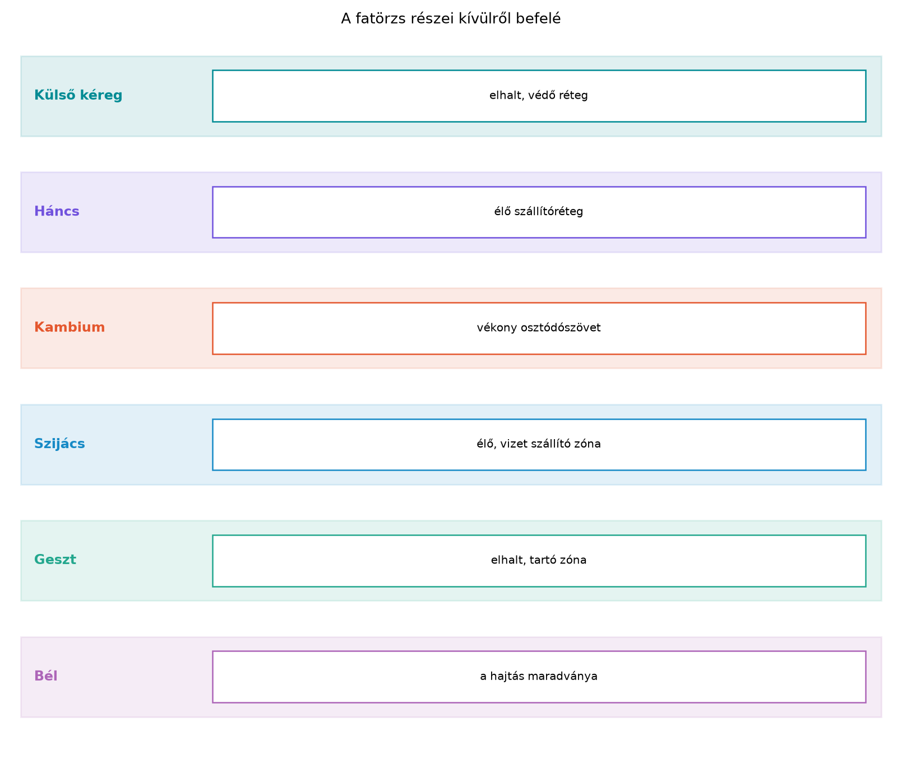

Egy megrendelő tölgyfa étkezőasztalt szeretne. A katalógusban két asztallapot is mutat: az egyiken a rajzolat vékony, hullámos vonalakból áll, a másikon széles, „tükrös” foltok látszanak. Ugyanaz a faanyag, mégis teljesen más a kép. Az asztalosnak értenie kell, miért. Ha rosszul választja meg a vágási irányt, vagy nem ismeri a fa szerkezetét, a megmunkálásnál szakad a szál, a felületkezelésnél foltos lesz a pác, a kész bútor pedig vetemedhet. Ez az alfejezet a fa makroszerkezetéből indul: mi van a kéreg alatt, mit árul el az évgyűrű, és mi a különbség a bütü-, a sugár- és a húrmetszet között.
Képzeld el, hogy egy frissen vágott rönk bütüjét nézed. A bütü a törzs tengelyére merőlegesen vágott felület – a „keresztmetszet”. Kívülről befelé haladva sötét, repedezett kéreg, alatta vékony kéreg alatti réteg, majd világos, nedves szijács és sötétebb, keményebb geszt látható. A közepén kis pötty: a bél. A körök pedig az évgyűrűk. Ezt a szerkezetet mutatja az alábbi rétegfelépítés:

A kép arra emlékeztet: a fa nem egyszerű „anyag”, hanem egy élő szervezet része volt, és minden látható vonalnak, színnek és foltnak működési magyarázata van.
Az asztalos a törzset dolgozza fel, de a törzs szerkezete csak akkor érthető, ha a fát élő rendszerként látjuk. A fa három fő része:
A törzs belsejében kétirányú szállítás történik: a gyökértől felfelé víz és ásványi anyagok, a koronától lefelé pedig a fotoszintézissel előállított cukoroldat. Ez a szállítórendszer a fatörzs anatómiai felépítésében is látható.
Definíció. A xilém a fatest, amely a folyadékok felfelé szállítását és a szilárdságot adja. A floém (háncs) a kéreg alatt elhelyezkedő szállítószövet, amely a cukoroldatot szállítja. A kambium a kettő között van.
A frissen vágott bütün a következő részeket mutatja:
Szabály. A faanyagot a kéreg és a háncs eltávolítása után kapjuk; az asztalos a szijács és geszt tartományából dolgozik. A szijács–geszt arány fafajtól és életkortól függ, és befolyásolja a színt, a tartósságot és a ragaszthatóságot.
Megjegyzés. A geszt és szijács közötti átmenet nem mindig éles. A tölgynél, diónál látványos, a lucfenyőnél és bükknél a friss vágáson alig lehet elkülöníteni. Ilyenkor vízpróba vagy színkémiai jelzés segíthet; a szín és a tartósság azonban nem mindig függ össze.
A mérsékelt égövi fák törzsében a kambium tavasszal gyorsan, nagyobb üreggel rendelkező, világos sejteket termel – ez a korai pászta. Nyár végén és ősszel lassabban növekszik, a sejtek kisebbek, vastagabb falúak, sötétebbek – ez a késői pászta. A világos és sötét sáv együtt egy évgyűrűt alkot.
Definíció. Az évgyűrű a fa keresztmetszetén látható, egy vegetációs időszak alatt képződött szövetgyűrű, amely korai és késői pásztából áll.
Példa. Egy mérsékelt övi lombfánál a bütün a tavaszi gyors növekedés miatt a korai pászta széles és lyukacsos (nagy edényekkel), a késői pászta sűrű, sötét. Ez az évgyűrűhatár.
Megjegyzés. A trópusi fák egy részénél nincs évgyűrű, mert az éghajlat nem váltakozik élesen; ott az évgyűrű helyett gyakran csak növekedési zónákat látunk. A fafajfelismerésnél ezt is figyelembe kell venni.
A tűlevelű fák fájában gyakran gyantajáratok vannak. Ezek hosszanti és keresztirányú csatornák, amelyek folyékony gyantát választanak ki. A fenyőfa gyantája ragacsos, a pengét, csiszolószalagot hamar tömíti, és a felületkezelő anyagok tapadását is rontja. A lucfenyőnél, erdeifenyőnél a gyantajáratok láthatók a bütün, a vörösfenyőnél is megtalálhatók, de kisebb számban. A gyanta a fa védelmét szolgálja a sérülésekkel és kórokozókkal szemben.
Figyelem. A gyantás fenyő felületkezelése előtt gyantamentesítés szükséges; ezt a A felületek előkészítése: halványítás, gyantamentesítés, tapaszolás, csiszolás alfejezetben tárgyaljuk.
A faanyag nem egyenletes, izotrop anyag: tulajdonságai irányfüggők. Három anatómiai főirányt különböztetünk meg:
A három főirányhoz három főmetszet tartozik:
Az ábra bal felső részén a bütü látható kívülről befelé: kéreg, háncs, kambium, a világos szijács, a sraffozott geszt és középen a bél; az évgyűrűk vékony körök, a bélsugarak sugárirányú vonalak. Az A–A sík a bélen megy át (sugármetszet), a B–B sík a béltől eltolva, az évgyűrűket érintőlegesen vágja (húrmetszet). Alul a három felület: a bütün évgyűrű-ívek, a sugármetszeten párhuzamos csíkok bélsugár-tükrökkel, a húrmetszeten ívek (fladeres rajzolat). A HTML-változatban csúszkával tolhatod a metszősíkot a béltől kifelé, és megfigyelheted, hogyan vált a rajzolat tükrösből fladeresbe.
Szabály. A főmetszetek felismerése a fafajfelismerés és a vágási mód megválasztásának alapja. A bütün az évgyűrűk száma az életkor és a növekedési viszonyok becslésére használható; a sugár- és húrmetszet rajzolata a bútor megjelenését határozza meg.
A fa szöveti elemei mikroszkopikus csövek és sejtek, amelyek funkció szerint három csoportba sorolhatók: szállító, szilárdító és raktározó elemek.
A bal oldali tűlevelű blokkon a bütün a tág korai és a szűk, vastag falú késői pásztabeli tracheidák, az évgyűrűhatár, a bélsugár és egy gyantajárat látszik; a sugármetszeten a bélsugár vízszintes sáv, a húrmetszeten kis orsó. A jobb oldali lombos blokkon a korai pásztában nagy edények (pórusok), a késői pásztában kicsik sorakoznak a rostok között; a széles bélsugár a sugármetszeten fénylő „tükör” foltként jelenik meg.
Szabály. A szöveti elemek aránya és elrendezése határozza meg a famintázatot, sűrűséget, keménységet, zsugorodást és a megmunkálhatóságot. A tűlevelű fák egyszerűbb szerkezetűek, a lombos fák szöveti képe változatosabb.
A fa szerves anyag, amely elsősorban három nagy molekulacsoportból áll:
Megjegyzés. A csersav tartalmú fák (tölgy, gesztenye, dió) nedves környezetben fémszerelvényekkel érintkezve sötét foltot okoznak – ezt a Hazai kemény lombos fafajok és a Bútorvasalatok, kötővasalatok, csavarok és kötőelemek alfejezet tárgyalja.
Technológiai következmények. A fa vegyi összetétele közvetlenül hat a megmunkálásra és a felületkezelésre:
A fa anatómiai felépítésének egyik legfontosabb gyakorlati következménye az anizotrópia: a tulajdonságok irányonként változnak. A rostirányban a szilárdság nagy, a zsugorodás kicsi; húrirányban a zsugorodás nagyobb, mint sugárirányban. Ez a fa „mozgásának” alapja, amelyet a Zsugorodás, dagadás és vetemedés: a fa „mozgása” alfejezetben számítunk.
Továbbvitt eredmény. A bütü-, sugár- és húrmetszet, valamint a rostirány fogalma a fafizika (nedvesség, zsugorodás), a fahibák felismerése, a fafajmeghatározás és a forgácsolás alfejezeteinek alapja. A rostirányt a gyalulásnál, marásnál, csiszolásnál és a kötések méretezésénél is figyelembe kell venni: a szerszám lehetőleg rostirányban dolgozzon; a bütü- és húrmetszetű felületek eltérően viselkednek a nedvességváltozásra.
A téma elsősorban leíró jellegű, de két egyszerű számítással a fa szerkezetéből adódó gyakorlati mennyiségeket becsülhetjük.
1. példa – Életkor becslése évgyűrűkből.
Adott: egy tölgy tuskó bütüjén a béltől a kéreg felé mérve a sugár 180
mm. Ezen a sugáron 36 évgyűrűt számolunk.
Keresett: a fa hozzávetőleges életkora, ha a növekedést egyenletesnek
feltételezzük.
Megoldás:
Mivel a bél és kéreg közötti sugáron minden év termel egy gyűrűt, a
fa életkora ≈ 36 év.
Ellenőrzés: a kapott 5 mm/évgyűrű reális mérsékelt övi
tölgynél; ha a gyűrűk nagyon szűkek, az életkor nő, ha szélesek, gyors
növekedésre utal. Ez a becslés csak akkor pontos, ha a bél látható, és a
kéreg nem hiányzik.
2. példa – A geszt területi aránya a bütün.
Adott: egy akác rönk bütüje kör alakú, átmérője
.
A geszt sötét zónája szintén kör, átmérője
.
Keresett: a geszt által elfoglalt terület aránya a teljes bütüfelülethez
képest.
Megoldás:
A teljes bütüfelület:
A gesztfelület:
Az arány:
Ellenőrzés: az arány ésszerű: az akác gesztje
jellemzően a sugár kb. 60–70 %-át teszi ki, de a területi arány
négyzetes, így kisebb a sugárarányból számoltnál. Ezt a százalékot az
anyagkihozatalnál és a színképnél használjuk. Megjegyzés: a szijács
területi aránya így 61 %; a gyakorlatban a szijácsot sok esetben
eltávolítják bútoripari felhasználás előtt, ezért a hasznos geszthányad
becslése fontos.
A fa szerkezetét a műhelyben elsősorban a bütün és a hosszirányú felületek megfigyelésével ellenőrizzük.
Hiba: a tanuló összetéveszti a sugár- és
húrmetszetet.
Ok: a két felület rajzolata hasonlíthat, ha a
bélsugarak keskenyek.
Helyes gyakorlat: a bütün évgyűrűihez viszonyítunk: a
sugármetszet merőlegesen, a húrmetszet érintőlegesen metszi az
évgyűrűket. A bélsugarak a sugármetszeten tükrökként látszanak.
Hiba: a friss fűrészáru bütüjét szárítás előtt
nem zárják le.
Ok: a bütün a nedvesség sokszor gyorsabban távozik,
mint a hosszfelületen, ezért a végek gyorsabban zsugorodnak, és
bütürepedés keletkezik.
Helyes gyakorlat: a friss fűrészáru bütüjét bütüvédő
anyaggal (viasz, emulzió, festék – ellenőrizendő: gyártói
adatlap) zárjuk le; kész terméken a bütüt a többi felülettel
legalább azonos rétegszámmal kezeljük, kültéren pedig szerkezetileg
óvjuk a víztől.
Hiba: a gyantás fenyőt gyantamentesítés nélkül
pácoljuk.
Ok: a gyanta elutasítja a pácolószert és a lakkot,
foltok jelennek meg.
Helyes gyakorlat: először gyantamentesítő oldószerrel
kezeljük a felületet, majd száradás után csiszolunk.
Hiba: a szerszámot a rostiránnyal szemben
mozgatjuk gyalulásnál.
Ok: a rostirány ellenében a penge beleakad a szálba, és
kitépést okoz.
Helyes gyakorlat: a munkadarabot úgy fogjuk be, hogy a
szálirány a mozgás irányába haladjon; ha hullámos a szál, éles késsel,
kis fogásmélységgel dolgozzunk.
Egy asztalosműhelyben a megrendelő két tölgyfa asztallapot rendel: az egyik legyen „tükrös”, a másik „fladeres”. Az asztalos a szárított deszkák közül kiválasztja a megfelelő vágási képet. A tükrös rajzolathoz a rönköt a bélen átmenő sugárirányú metszettel vágott deszkát használ; a fladereshez a béltől eltolt, húrirányú vágást. A munkalap szélességi egyesítésénél figyel arra, hogy a szomszédos lamellák száliránya azonos legyen, és az évgyűrűállás váltakozzon, hogy a zsugorodásból adódó vetemedést kiegyenlítse. A bütüfelületet nem hagyja látható helyen, vagy fejelőléccel (élléccel) takarja. A tanulság: a fa anatómiája nem laboratóriumi ismeret, hanem a vágási kép, a szín és a méretstabilitás megválasztásának kulcsa.
1. feladat (A)
Sorolj fel legalább három különbséget a bütü-, sugár- és húrmetszet
között. Adj meg mindegyikhez egy-egy gyakorlati felhasználási
példát.
2. feladat (A)
Egy lucfenyő deszka bütüjén világos és sötét sávok váltakoznak. Nevezd
meg, mi a világos sáv, mi a sötét sáv, és miért keletkeznek.
3. feladat (B)
Egy tölgy bütüjén a béltől a kéregig 96 évgyűrűt számolunk, a sugár 240
mm. Számítsd ki az átlagos évgyűrűszélességet, és becsüld meg a fa
korát. Ellenőrizd az eredményt.
4. feladat (B)
Egy gesztenye rönk átmérője 400 mm, a geszt átmérője 300 mm. Számítsd ki
a geszt területi arányát a teljes bütüfelülethez képest. (Használj π ≈
3,14 értéket.)
5. feladat (C)
Egy asztalos egy tölgy deszkából asztallapot készít. A deszka
húrmetszetből való. Milyen rajzolatot fog mutatni? Miért? Milyen
probléma léphet fel a száradás során, és hogyan lehet csökkenteni?
Indokold.
6. feladat (D)
Vizsgálj meg egy valós fadarabot (ha van műhelyben): azonosítsd a bütün,
a sugár- és a húrmetszetet, a geszt-szijács határt, az évgyűrűket és a
bélsugarakat. Rajzold le egyszerű vázlaton a bütü évgyűrűit és a
sugárirányú bélsugarakat. Nevezd meg a fafajt, ha felismerted, és
becsüld meg a fa korát az évgyűrűk alapján.
Önellenőrzés – válaszok
1. feladat
A bütümetszet a tengelyre merőleges: koncentrikus évgyűrűket,
sugárirányú bélsugarakat, korai és késői pásztát mutat;
fafajfelismerésre használjuk. A sugármetszet a bélből kifelé halad: a
bélsugarak tükrös foltokban jelennek meg; tölgy bútoroknál tükrös
rajzolatot ad. A húrmetszet az évgyűrűket érintőlegesen vágja: hullámos,
fladeres rajzolat; padló- és falburkolatoknál gyakori.
2. feladat
A világos sáv a korai pászta (tavaszi gyors növekedés, nagy sejtek), a
sötét sáv a késői pászta (nyári-őszi lassú növekedés, sűrű sejtek). A
váltakozás az éghajlati évszakoknak megfelelő növekedési ütemből adódik;
egy világos + sötét sáv egy évgyűrű.
3. feladat
Átlagos évgyűrűszélesség = 240 mm / 96 = 2,5 mm/évgyűrű. A fa becsült
életkora 96 év. Ellenőrzés: 96 × 2,5 = 240 mm, visszaszámolva
stimmel.
4. feladat
Teljes bütüfelület: A_t = π·(400/2)² = 3,14·200² = 125 600 mm².
Gesztfelület: A_g = π·(300/2)² = 3,14·150² = 70 650 mm². Arány: 70 650 /
125 600 ≈ 0,5625 = 56,3 %. A geszt területi aránya kb. 56 %, a szijácsé
kb. 44 %.
5. feladat
A húrmetszetből származó deszka fladeres, hullámos rajzolatot mutat,
mert az évgyűrűket érintőlegesen vágjuk. A száradás során a húrirányú
zsugorodás nagyobb, mint a sugárirányú, ezért a deszka harántirányban
erősebben mozog, és „csónakosan” vetemedhet. Csökkenthető a vetemedés: a
deszkát megfelelően szárítva, a lamellák válogatásával, az évgyűrűállás
váltogatásával (a szálirány azonos marad) és keskeny lamellák szélesítő
toldásával. Ha az asztallap több keskeny lamellából készül, a mozgás
kisebb látványhibát okoz, mint egyetlen széles deszkánál.
6. feladat
A gyakorlati feladat megoldása műhelymunkát igényel. A vázlaton a bütün
kör vagy sokszög alakú évgyűrűkkel, a bélsugarak sugárirányú vékony
vonalakkal szerepeljenek. A fafaj felismeréséhez használjuk a Fafajfelismerés: elsődleges és másodlagos
meghatározók alfejezetben tanultakat. A becsléshez számoljuk meg az
évgyűrűket a bél és a kéreg között.
A fa élő szervezetből, a fatörzsből származó, irányfüggő tulajdonságú anyag. A törzs bütüjén kívülről befelé a kéreg, a háncs, a kambium, a szijács, a geszt és a bél található. Az évgyűrű korai (világos, laza) és késői (sötét, tömör) pásztából áll; a gyűrűs likacsú lombos fák nagy edényei a korai pásztában, a szórt likacsúaké egyenletesen helyezkednek el. A tűlevelűekre tracheidák, a lombosokra edények és rostok jellemzők; a bélsugarak sugárirányú szalagok. A három főmetszet: bütü (keresztmetszet), sugármetszet (tükrös) és húrmetszet (fladeres). A fa vegyi anyagai: cellulóz, hemicellulóz, lignin és járulékos anyagok (gyanta, csersav). Továbbvitt eredmény: a bütü-, sugár- és húrmetszet, valamint a rostirány ismerete a nedvességtartalom, a zsugorodás, a fahibák, a fafajfelismerés és a forgácsolás alfejezeteiben használandó. A rostirány mentén a tulajdonságok eltérőek, ezért minden megmunkálásnál figyelembe kell venni.